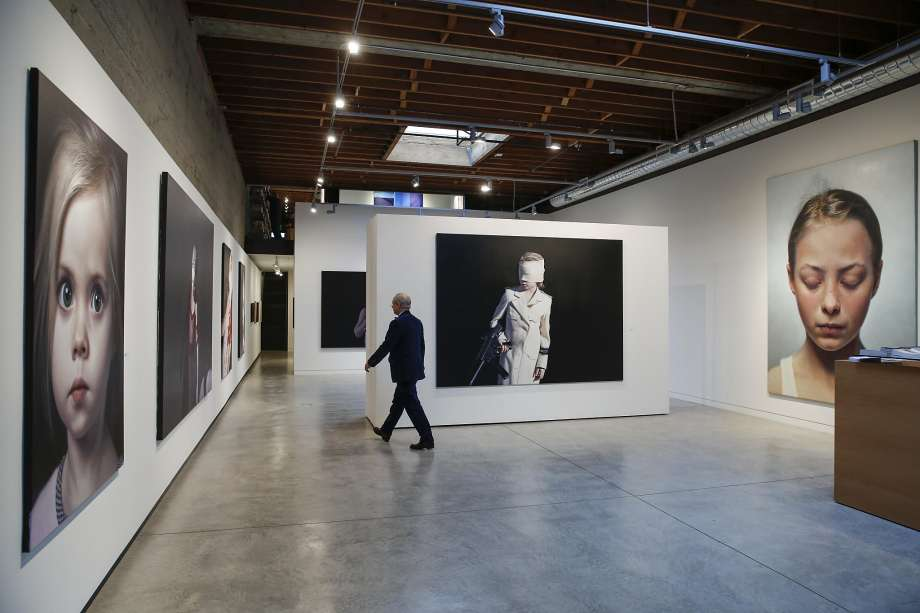

Modernism on the move again-37 years later
Modernism Inc. owner Martin Muller walks through his gallery with works by Gottfried Helnwein on exhibition on Friday, Feb. 17, 2017 in San Francisco, Calif.

When Martin Muller arrived from Geneva by way of Little Rock, Ark., to open a San Francisco art gallery in 1979, he was too new to know not to put it upstairs in a lighting warehouse South of Market.
Modernism, as he called it, turned out to be the first commercial art gallery in SoMa. Now Modernism is pushing the frontier again, having come to rest wedged between an SRO hotel and an auto body shop on Ellis Street.